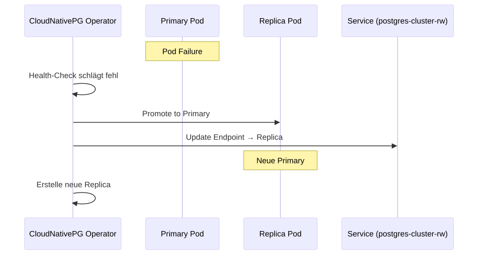

CloudNativePG
1. Cluster-Definition
PostgreSQL wird über den CloudNativePG Operator als Kubernetes Custom Resource verwaltet (INF-005, SWA-018, ADR-0023). Die Cluster-Definition liegt unter infra/k8s/postgres/.
1.1. Aktuelle Konfiguration
| Parameter | Wert |
|---|---|
Instanzen |
2 (Primary + 1 Replica, automatisches Failover) |
Storage |
10 Gi (hcloud-volumes) |
shared_buffers |
256 MB |
effective_cache_size |
512 MB |
Memory |
512 Mi Request / 1 Gi Limit |
CPU |
250m Request / 1000m Limit |
Namespace |
postgres |
Service-Endpunkt |
postgres-cluster-rw.postgres.svc.cluster.local:5432 |
2. Failover
Bei Ausfall der Primary-Instanz übernimmt die Replica automatisch. Der Operator:
-
Erkennt den Ausfall (Health-Check fehlgeschlagen)
-
Promoted die Replica zur neuen Primary
-
Aktualisiert den
-rw-Service-Endpunkt -
Startet eine neue Replica (wenn Node verfügbar)

3. Datenbanken
Der Cluster folgt dem Database-per-Service-Pattern (ADR-0019). Beim Bootstrap werden alle benötigten Datenbanken automatisch erstellt:
| Datenbank | Service | Owner |
|---|---|---|
blog_content |
blog-content |
app (via initdb) |
user_management |
user-management |
app (via postInitApplicationSQL) |
Die initdb-Konfiguration erstellt die primäre Datenbank (blog_content). Weitere Datenbanken werden über postInitApplicationSQL angelegt:
bootstrap:
initdb:
database: blog_content
owner: blog_content
postInitApplicationSQL:
- CREATE DATABASE user_management OWNER app;4. Credentials
Die Datenbank-Credentials werden vom Operator automatisch als Kubernetes Secret erstellt:
| Secret | Inhalt |
|---|---|
postgres-cluster-app |
username, password (für Application User) |
postgres-cluster-superuser |
username, password (für Admin-Zugang) |
Beide Services (blog-content und user-management) referenzieren das postgres-cluster-app Secret in ihrer Deployment-Konfiguration.